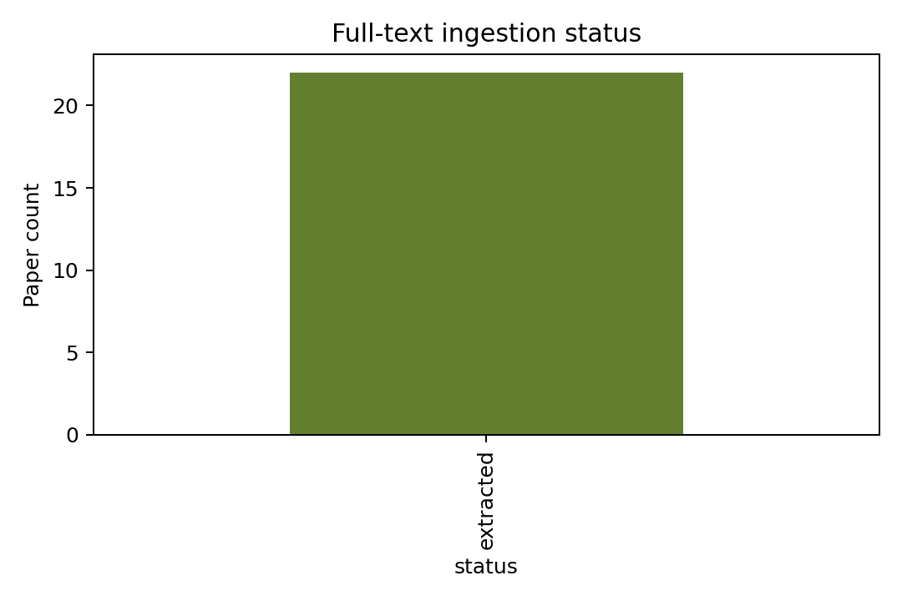
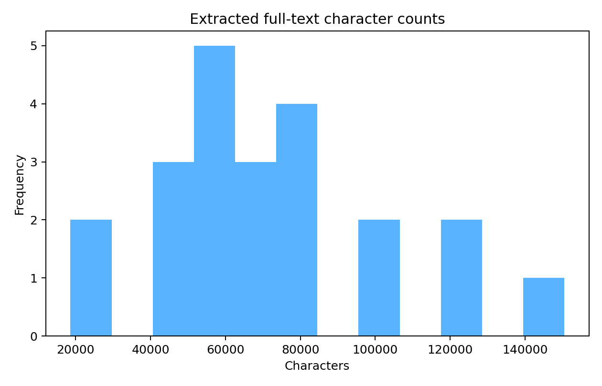
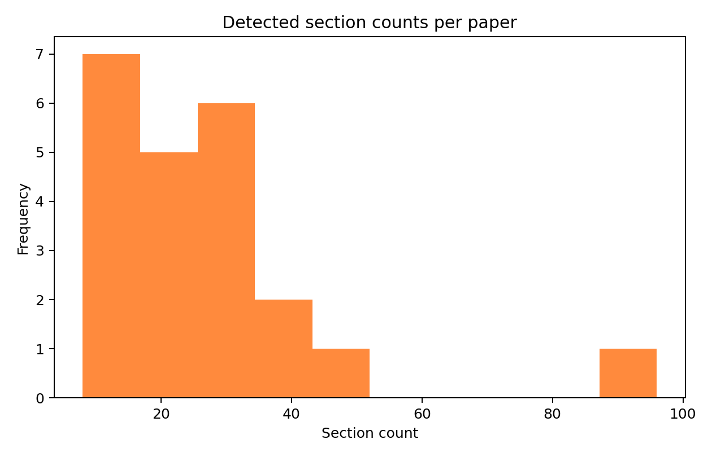
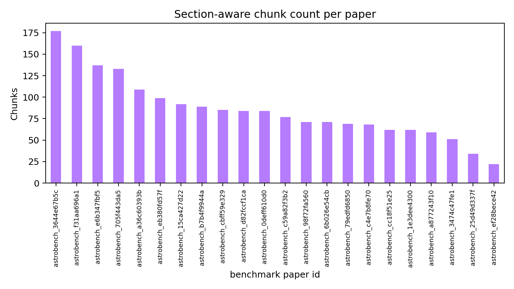

<!doctype html>
<html>
<head>
  <meta charset='utf-8'>
  <title>FMAP Full-text Report</title>
  <style>
    body { font-family: -apple-system, BlinkMacSystemFont, sans-serif; margin: 24px; line-height: 1.4; }
    .figure img { max-width: 720px; border: 1px solid #ddd; margin-bottom: 20px; }
    .card { border: 1px solid #ddd; border-radius: 10px; padding: 16px; margin: 16px 0; }
    pre { white-space: pre-wrap; background: #fafafa; padding: 10px; border-radius: 6px; }
  </style>
</head>
<body>
  <h1>FMAP full-text ingestion report</h1>
  <p>This report shows ingestion status, extraction quality indicators, detected sections, and chunking diagnostics for the curated benchmark corpus.</p>
  <div class='figure'></div><div class='figure'></div><div class='figure'></div><div class='figure'></div>
  <h1>Sample extracted papers</h1>
  <section class='card'><h2>Laplace-Legendre expansion of the planar planetary Hamiltonian</h2><p><strong>Status:</strong> extracted | <strong>Sections:</strong> 26 | <strong>Chars:</strong> 50612</p><p><strong>PDF:</strong> /Users/mariadjuric/FindMyArxivPaper/data/raw/pdfs/2603.16528v1.pdf</p><ul><li><strong>front_matter</strong><br><pre>Laplace-Legendre expansion of the planar
planetary Hamiltonian
Aya Alnajjarine1*, Jacques Laskar1*and Federico Mogavero2,1
1LTE, CNRS, Observatoire de Paris, Universit´ e PSL, Sorbonn e
Universit´ e, 77 Avenue Denfert-Rochereau, 75014 Paris, Fr ance.
2Dipartimento di Matematica “Tullio Levi-Civita”, Univers it` a degli
Studi di Padova, Via Trieste 63, 35121 Padova, Italy.
*Corresponding author(s). E-mail(s): aya.alnajjarine@obspm.fr ;
jacques.laskar@obspm.fr ;
Contributing authors: mogavero@math</pre></li><li><strong>Abstract</strong><br><pre>We explore a hybrid expansion of the disturbing function in p lanetary dynamics
that combines elements of the classical Laplace and Legendr e developments. This
formulation retains the structure of the Laplace expansion , but expresses the
inverse of the mutual distance as a series whose terms keep an exact dependence
on both the eccentricity and the semi-major axis ratio. We us e it to construct
the first-order secular Hamiltonian of the planar 3-body pro blem, relevant for
modeling the long-ter</pre></li><li><strong>1 Introduction</strong><br><pre>In planetary systems, the disturbing function plays a central role in understanding
the long-term dynamical evolution of planetary orbits. It encodes the gravitational
interactions between planets and provides the foundation for stu dying both secular
1arXiv:2603.16528v1 [astro-ph.EP] 17 Mar 2026
and resonant dynamics. Expanding the disturbing function as a pow er series in the
orbital elements has long been a key focus in celestial mechanics and fundamental to
constructing perturbative models o</pre></li><li><strong>2 Hamiltonian formulation and expansion of the</strong><br><pre>disturbing function
We consider a 3-body system consisting of a central star of mass m0and two planets
of masses m1andm2, withmi≪m0. Using canonical heliocentric variables ( Poincar´ e
1896;Laskar 1991 ), the Hamiltonian governing the Newtonian dynamics reads
H=2/summationdisplay
i=1/parenleftbigg/bardbl˜ri/bardbl2
2βi−µiβi
/bardblri/bardbl/parenrightbigg
/bracehtipupleft/bracehtipdownright/bracehtipdownleft/bracehtipupright
H0+˜r1·˜r2
m0
/bracehtipupleft/bracehtipdownright/bracehtipdownleft/bra</pre></li><li><strong>U1, (1)</strong><br><pre>whereriare the heliocentric position vectors of the planets, ˜riare their conju-
gate barycentric momenta, Gthe gravitational constant, µi=G(m0+mi), and
βi=m0mi/(m0+mi). The indices i= 1,2 refer to the inner and outer planets,
respectively. The Keplerian part of the Hamiltonian H0describes decoupled Keplerian
motions, each governed by the classical orbital elements: semi-ma jor axisa, eccen-
tricitye, inclination I, mean anomaly M, argument of pericenter ω, and longitude
of ascending node Ω. In </pre></li><li><strong>2.1 Legendre expansion of the direct part</strong><br><pre>We denote the mutual distance between the planets as ∆ = /bardblr1−r2/bardbl. Its inverse can
be expanded using Legendre polynomials as
a2
∆=a2
r2/summationdisplay
n∈N/parenleftbiggr1
r2/parenrightbiggn
Pn(cosS), (2)
whereSis the angle between the position vectors r1andr2, andPndenotes the
Legendre polynomial of degree n. Following the formalism of ( Laskar and Bou´ e 2010 ),
this expression can be transformed into a Fourier series in the mean anomalies Miand
written as a power series in the sem</pre></li></ul></section><section class='card'><h2>Democratic heliocentric coordinates underestimate the rate of instabilities in long-term integrations of the Solar System</h2><p><strong>Status:</strong> extracted | <strong>Sections:</strong> 8 | <strong>Chars:</strong> 28040</p><p><strong>PDF:</strong> /Users/mariadjuric/FindMyArxivPaper/data/raw/pdfs/2601.08019v1.pdf</p><ul><li><strong>front_matter</strong><br><pre>Draft version January 14, 2026
Democratic heliocentric coordinates underestimate the rate of instabilities in long-term integrations
of the Solar System
Hanno Rein
,1, 2, 3Kavi Dey
,4and Daniel Tamayo
4
1Dept. of Physical and Environmental Sciences, University of Toronto at Scarborough, Toronto, Ontario, M1C 1A4, Canada
2Dept. of Physics, University of Toronto, Toronto, Ontario, M5S 3H4, Canada
3Dept. of Astronomy and Astrophysics, University of Toronto, Toronto, Ontario, M5S 3H4, Canada
4Dept. </pre></li><li><strong>ABSTRACT</strong><br><pre>Wisdom-Holman (WH) integrators are symplectic operator-splitting methods widely used for long-
term N-body simulations of planetary systems. Most implementations use either Jacobi coordinates or
democratic heliocentric coordinates (DHC) for the Hamiltonian splitting, resulting in slightly different
algorithms. In this paper we report results from numerical experiments, which show that integrations
of the Solar System using DHC coordinates with typical timesteps of a few days suppress instabiliti</pre></li><li><strong>1.INTRODUCTION</strong><br><pre>Numerical integrations of the Solar System, have a
long history (see e.g. W. J. Eckert et al. 1951 for one
of the first simulations of this kind, and J. Laskar 2013
for a historical summary of the field). Although dif-
ferent authors use different numerical algorithms, most
modern long-term simulations use symplectic integra-
tors that make use of the Wisdom-Holman splitting
(J. L. Wisdom 1981; J. Wisdom &amp; M. Holman 1991;
H. Kinoshita et al. 1991). Various variations of the
Wisdom-Holman (WH) al</pre></li><li><strong>2.TESTS</strong><br><pre>All simulations were performed with the REBOUND
package (H. Rein &amp; S. F. Liu 2012). REBOUND in-
cludes several integrators, in particular the WH integra-
tor WHFast (H. Rein &amp; D. Tamayo 2015) which allows
us to choose the coordinate system for the Hamiltonian
splitting. We also run simulations with the WHFast512
integrator (P. Javaheri et al. 2023), which only supports
DHC. We include comparisons with WHFast512 because
it does not reuse any code from WHFast, and can there-
fore be seen as an ind</pre></li><li><strong>3.DISCUSSION</strong><br><pre>Our results from Sec. 2 show clear evidence that Ja-
cobi coordinates perform better than DHC in Solar Sys-
tem integrations. This is because when using Jacobi co-
ordinates for the Hamiltonian splitting, Mercury’s mo-
tion is decomposed into a Keplerian step on a two-body
orbit around the Sun, and an interaction step with the
other planets. In the limit where Mercury has a high
eccentricity, the Kepler solver still correctly solves for
the Keplerian motion around the Sun-Mercury barycen-
ter fo</pre></li><li><strong>4.CONCLUSIONS</strong><br><pre>Different instability rates of the Solar System have
been reported in the literature, ranging from∼0.1% to
1% (J. Laskar &amp; M. Gastineau 2009; R. E. Zeebe 2015;
D. S. Abbot et al. 2021; D. S. Abbot et al. 2023; N. A.
Kaib &amp; S. N. Raymond 2025). In this paper we traced
this discrepancy back to the coordinate system used in
the Hamiltonian splitting of the Wisdom-Holman inte-
grator. We showed that simulations using democratic
heliocentric coordinates (DHC) require a significantly
smaller timestep </pre></li></ul></section><section class='card'><h2>Exploring the formation mechanisms of tidal structures in globular clusters of extragalactic origin</h2><p><strong>Status:</strong> extracted | <strong>Sections:</strong> 17 | <strong>Chars:</strong> 96574</p><p><strong>PDF:</strong> /Users/mariadjuric/FindMyArxivPaper/data/raw/pdfs/2601.01110v2.pdf</p><ul><li><strong>front_matter</strong><br><pre>Astronomy&amp;Astrophysicsmanuscript no. aa57628-25©ESO 2026
February 24, 2026
Exploring the formation mechanisms of tidal structures in globular
clusters of extragalactic origin
Shouzhi Wang1,2,3, Jundan Nie3,⋆, Biwei Jiang1,2, Hao Tian3, Chao Liu3, and Ying-Hua Zhang3,4
1Institute for Frontiers in Astronomy and Astrophysics, Beijing Normal University, Beijing 102206, People’s Republic of China
2School of Physics and Astronomy, Beijing Normal University, Beijing 100875, People’s Republic of China
3</pre></li><li><strong>ABSTRACT</strong><br><pre>Tidal structures around globular clusters provide valuable insights into cluster evolution and the hierarchical assembly of the Milky
Way. Using wide-field imaging data from the DESI Legacy Survey combined with a color-magnitude matched-filter technique, we
performed a systematic analysis of extratidal features in 28 Galactic globular clusters of likely extragalactic origin, representing
the largest homogeneous sample examined in this context to date. The clusters display diverse morphologies: 1</pre></li><li><strong>6235, NGC 6333, IC 1257, FSR 1758, ESO-SC06, NGC 6715,</strong><br><pre>and NGC 6779) are located in regions not covered by DESI
Legacy Surveys. In addition, NGC 2808 and NGC 6101 are
covered only in thegandibands, respectively; NGC 5139 suf-
fers from severely incomplete coverage, with many areas lack-
ing photometric detections; IC 4499 is heavily contaminated by
field stars and has poor photometric quality; and NGC 2419, at a
distance of about 88 kpc (Baumgardt &amp; Vasiliev 2021), is too re-
mote for our photometric selection criteria to be reliably applied.
After </pre></li><li><strong>NGC 6341 12.44 45.70 5.44 36.4 1.68 0.03 0.21 -2.31 1.00 G2 GSE</strong><br><pre>Terzan 7 4.17 8.78 4.35 4.6 0.93 0.20 0.08 -0.32 0.39 G1 Sag
Arp 2 9.03 10.41 4.59 4.5 0.88 0.22 0.08 -1.75 0.26 G1 Sag
Terzan 8 3.98 13.51 4.88 6.0 0.60 0.20 0.03 -2.16 0.01 G1 Sag</pre></li><li><strong>NGC 7099 18.97 28.93 5.08 21.0 2.50 0.06 0.26 -2.27 1.10 G3 GSE</strong><br><pre>Pal 12 19.10 11.89 3.79 2.5 2.98 0.16 0.22 -0.85 0.82 G3 Sag
Pal 13 2.19 5.51 3.44 1.8 0.66 0.42 0.43 -1.88 0.82 G1 Seq</pre></li><li><strong>NGC 7492 4.51 12.08 4.29 4.4 0.72 0.12 0.37 -1.78 0.77 G1 GSE</strong><br><pre>Notes.Columns list: cluster name, King and dynamical tidal radii, present-day cluster mass (logarithmic scale), central escape velocity, central
concentration, ratio of half-mass radius to dynamical tidal radius, mass-loss fraction, metallicity, relaxation-age ratio, classification type, and
possible progenitor system. Among them,rKing
t,cand [Fe/H] are taken from the Harris catalog (Harris 1996, 2010 edition); the classification type
and progenitor system are derived in this work; all other par</pre></li></ul></section><section class='card'><h2>Distribution function-based modelling of discrete kinematic datasets, in application to the Milky Way nuclear star cluster</h2><p><strong>Status:</strong> extracted | <strong>Sections:</strong> 24 | <strong>Chars:</strong> 106290</p><p><strong>PDF:</strong> /Users/mariadjuric/FindMyArxivPaper/data/raw/pdfs/2603.29502v1.pdf</p><ul><li><strong>front_matter</strong><br><pre>Draft version April 1, 2026
Typeset using L ATEXtwocolumn style in AASTeX7.0.1
Distribution function-based modelling of discrete kinematic datasets,
in application to the Milky Way nuclear star cluster
Eugene Vasiliev,1Anja Feldmeier-Krause,2and Mattia C. Sormani3
1University of Surrey, Guildford GU2 7XH, UK
2University of Vienna, T¨ urkenschanzstraße 17, 1180 Vienna, Austria
3Como Lake centre for AstroPhysics (CLAP), DiSAT, Universit` a dell’Insubria, Via Valleggio 11, 22100 Como, Italy</pre></li><li><strong>ABSTRACT</strong><br><pre>We present a method for constructing dynamical models of stellar systems described by distribution
functions and constrained by discrete-kinematic data. We implement various improvements compared
to earlier applications of this approach, demonstrating with several examples that it can deliver mean-
ingful constraints on the mass distribution even in situations when the density profile of tracers and
the selection function of the kinematic catalogue are unknown. We then apply this method to the
M</pre></li><li><strong>1.INTRODUCTION</strong><br><pre>The centre of our Galaxy contains two exciting ob-
jects: the supermassive black hole (SMBH) Sgr A⋆of
mass M•≈4.3×106M⊙(GRAVITY Collaboration
2022) and the surrounding nuclear star cluster (NSC).
The NSC, in turn, is embedded in the nuclear stellar
disc (NSD), which extends up to a couple hundred pc
(see, e.g., Schultheis et al. 2025 for a review), and at
even larger distances (a few kpc), by the Galactic bar,
then the Galactic stellar disc and halo, and finally the
rest of the known Universe.
N</pre></li><li><strong>2.CONSTRUCTION OF DYNAMICAL MODELS</strong><br><pre>2.1. Overview of methods
Several approaches have been used for modelling the
Milky Way NSC and NSD in the past. Most stud-
ies relied on the Jeans equations, either spherical (e.g.,
Sch¨ odel et al. 2009; Do et al. 2013b; Chatzopoulos et al.
2015a; Fritz et al. 2016) or axisymmetric (Feldmeier
et al. 2014; Chatzopoulos et al. 2015a; Sormani et al.
2020; Feldmeier-Krause et al. 2025). These are easy to
understand and fast to run, but have a few fundamen-
tal limitations. First, Jeans equations ty</pre></li><li><strong>J02#</strong><br><pre>1 +κtanhJϕ
Jϕ,0
,
g(J)≡grJr+gzJz+ (3−gr−gz)|Jϕ|,
h(J)≡hrJr+hzJz+ (3−hr−hz)|Jϕ|,
It is well suited to modelling spheroidal components,
and has the following free parameters, listed in Table 1
along with their fiducial values and allowed range. The
total mass MNSCis log-scaled in the fitting process, as
are other dimensional parameters. The characteristic
(scale) action J0defines the transition between the in-
ner and outer asymptotic regimes. The power-law slope
of the DF in action space in the </pre></li><li><strong>3.MODEL FITTING</strong><br><pre>Throughout this work, we denote the position and ve-
locity in the intrinsic coordinate system of the model by
lowercase x,v, and in the observed system by uppercase
X,V. In the application to the NSC, we adopt the stan-
dard right-handed Galactocentric coordinate system for
the model, shifted slightly to place the SMBH exactly at
origin, with xybeing the equatorial plane and the Sun
located at x=−D0≈ −8.2 kpc (GRAVITY Collabo-
ration 2019). Although there are indications that the
major axis of </pre></li></ul></section><section class='card'><h2>Forward-modelling Milky Way Cepheids: selection effects and physical priors in the Gaia-HST calibration</h2><p><strong>Status:</strong> extracted | <strong>Sections:</strong> 96 | <strong>Chars:</strong> 125936</p><p><strong>PDF:</strong> /Users/mariadjuric/FindMyArxivPaper/data/raw/pdfs/2603.09880v1.pdf</p><ul><li><strong>front_matter</strong><br><pre>MNRAS000, 1–26 (2025) Preprint 11 March 2026 Compiled using MNRAS L ATEX style file v3.0
Forward-modelling Milky Way Cepheids: selection effects and
physical priors in theGaia–HSTcalibration
Richard Stiskalek1⋆, Adam G. Riess2,3, Harry Desmond4, Guilhem Lavaux5
and Dan Scolnic6
1Astrophysics, University of Oxford, Denys Wilkinson Building, Keble Road, Oxford, OX1 3RH, UK
2Space Telescope Science Institute, 3700 San Martin Drive, Baltimore, MD 21218, USA
3Department of Physics and Astronomy, John</pre></li><li><strong>ABSTRACT</strong><br><pre>The advent of high-precisionGaiaparallaxes for Milky Way Cepheids enables percent-
levelcalibrationofthelocaldistanceladderandH 0.WerevisittheMilkyWayCepheid
calibrationfromGaiaEDR3parallaxesusingafullyforward-modelledBayesianframe-
work that simultaneously infers the period–luminosity relation, theGaiaparallax
zero-point offset, and individual stellar distances while explicitly incorporating the
disk geometry of the Galaxy through the distance prior and the selection functions
specified in two </pre></li><li><strong>1 INTRODUCTION</strong><br><pre>The∼5σdiscrepancybetweenlocaldistance-ladderandcos-
mic microwave background (CMB)-calibrated inferences of
H0, known as the Hubble tension, is one of the most press-
ing problems in cosmology (e.g. Riess et al. 2022a; Planck
Collaboration et al. 2020; Louis et al. 2025; Camphuis et al.
2025; Freedman et al. 2025; Di Valentino et al. 2025). While
there are many routes to localH 0, which contribute to the
overall tension (see H0DN Collaboration et al. 2025 for their
⋆richard.stiskalek@physics.ox.</pre></li><li><strong>2 GEOMETRIC AND CEPHEID DATA</strong><br><pre>We use the MW Cepheids compiled by R21, withHSTpho-
tometry in the F555W, F814W, and F160W bands andGaia
EDR3 parallaxes (Gaia Collaboration et al. 2021). Of the75
Cepheids in the R21 catalogue, seven lackGaiaEDR3 par-
allaxes that pass the RUWE or GOF quality cuts (CY Aur,
DL Cas, RW Cam, SV Per, SY Nor, RX Cam, and U Aql)
and are excluded. We further exclude S Vul and SV Vul,
which were flagged as possible outliers in R21. Both ex-
hibit significant secular period evolution, and as the longest</pre></li><li><strong>MNRAS000, 1–26 (2025)</strong><br><pre>Forward-modelling Milky Way Cepheids3
via the reddening-free Wesenheit magnitudemW
H(Madore
1982).
TheCepheidswereobservedacrosstwoHSTcampaigns
with distinct selection criteria given in R21: Cycle 22 (C22)
targeted long-period Cepheids (P &gt;8 days) within a dis-
tance range of∼6.6 kpc, while Cycle 27 (C27) targeted
nearby Cepheids at distances&lt;1.25 kpc, withV &gt;6 magto
avoidGaiasaturation. C27 was undertaken after the discov-
ery of theGaiaparallax offset anomaly and the subsequent
need for a broa</pre></li><li><strong>H−˜MW</strong><br><pre>H,1−˜bW
logP
1 day−1
−˜ZW[Fe/H]−10
,(1)
where ˜MW
H,1,˜bW, and ˜ZWare the period–luminosity zero-
point, slope, and metallicity coefficient from Riess et al.
(2016). This cut was applied to the predicted photomet-
ric parallax rather than theGaiatrigonometric parallax
because the C27 proposal was written beforeGaiaDR3;
the DR2 parallax uncertainties were roughly twice as large,
making the photometric estimate more precise. However, we
shall later treat this selection as a smooth lower limit o</pre></li></ul></section><section class='card'><h2>A Selection Aware View of Black Hole-Galaxy Coevolution at High Redshift</h2><p><strong>Status:</strong> extracted | <strong>Sections:</strong> 11 | <strong>Chars:</strong> 62768</p><p><strong>PDF:</strong> /Users/mariadjuric/FindMyArxivPaper/data/raw/pdfs/2603.04358v1.pdf</p><ul><li><strong>front_matter</strong><br><pre>Astronomy &amp; Astrophysicsmanuscript no. main©ESO 2026
March 5, 2026
A Selection Aware View of Black Hole–Galaxy Coevolution at
High Redshift
F. Ziparo1, S. Carniani1, S. Gallerani1, and B. Trefoloni1
Scuola Normale Superiore, Piazza dei Cavalieri 7, I-56126 Pisa, Italy
e-mail:francesco.ziparo@sns.it</pre></li><li><strong>ABSTRACT</strong><br><pre>The large population of broad-line Active Galactic Nuclei (AGN) observed with the James Webb Space Telescope
(JWST) atz≳4opens a new window onto the black hole–galaxy connection in the first Gyr of cosmic history. We
use the JADES survey-level dataset and develop a forward-modeling Bayesian framework that explicitly accounts for
broad Hαdetectability, ensuring that selection effects are incorporated into the likelihood function. With this approach,
we constrain the black hole–stellar mass (M BH–</pre></li><li><strong>G,(2)</strong><br><pre>which we inverted to obtainσ dyn. The effective radiusR eff
was derived from the stellar mass using the empiricalM ⋆–
Reffrelation by Allen et al. (2025). We fixed the structural
parameters toK(n) = 8.06andK(q) = 1.02, correspond-
ing to a Sérsic index ofn= 1and an axis ratio ofq≈0.73,
consistent with typical star-forming disk galaxies at high
redshift (e.g., van der Wel et al. 2022). The resulting dis-
persionσ dynwas then used as the Gaussian standard de-
viation of the narrow mock Hαcomponent</pre></li><li><strong>M⊙</strong><br><pre>= 6.6 + 0.47 logLbroad
Hα
1042erg s−1
+ 2.06 logFWHM broad
103km s−1
.(4)
To simulate NIRSpec data observations with a spectral res-
olution of∆λ/λ≈2700, each synthetic spectrum was con-
volved with the line spread function of the instrument andsampled with a spectral channel of 40km/s. We then added
Gaussian white noise to each synthetic spectrum. We gen-
erated two datasets: a deep dataset with a noise level of
6×10−21ergs−1cm−2Å−1,matchingthedepthofthedeep-
est observations in the JADES s</pre></li><li><strong>RMS2,(5)</strong><br><pre>whereF iandM i(p)denote the observed and model flux
densities in thei-th spectral channel, respectively, and we
compute the Bayesian information criterion (BIC)
BIC =−2 lnL+klnN,(6)
wherekisthenumberoffreeparametersandNthenumber
of spectral channels.
A broad component was considered significantly de-
tected when at least one of the following conditions was
satisfied:
(i)∆BIC = BIC single−BIC double &gt;10, which indicates
very strong statistical preference for the two-component
modeloverthesingle-G</pre></li><li><strong>–M BH= 106–1010M⊙</strong><br><pre>–λEdd= 0.1–1
We sampled theM BH–M⋆space with a50×50loga-
rithmic grid. For each grid point, we generated 100 realiza-
tions by randomly selecting values ofλ Eddand SFR within
their allowed ranges, assuming uniform distributions in log-
space. For each realization, a synthetic Hαspectrum was
created and processed through the spectral fitting and de-
tection procedure described in Sec.2.2.
We then computed, for each point on a grid of inde-
pendently sampledM BHandM ⋆values, the fraction of re-
al</pre></li></ul></section><section class='card'><h2>Distribution functions for spheroids</h2><p><strong>Status:</strong> extracted | <strong>Sections:</strong> 31 | <strong>Chars:</strong> 46035</p><p><strong>PDF:</strong> /Users/mariadjuric/FindMyArxivPaper/data/raw/pdfs/2602.23127v1.pdf</p><ul><li><strong>front_matter</strong><br><pre>Mon. Not. R. Astron. Soc. 000, 000–000 (0000) Printed 27 February 2026 (MN L ATEX style file v2.2)
Distribution functions for spheroids
James Binney⋆
Rudolf Peierls Centre for Theoretical Physics, Clarendon L aboratory, Oxford OX1 3PU, United Kingdom</pre></li><li><strong>ABSTRACT</strong><br><pre>Galaxymodels comprisingseveralcomponents (including dark matte r) that arebound
by the self-consistently generated gravitational field are readily c onstructed from dis-
tribution functions (DFs) that are analytic functions of the action integrals J. We
explain why such models have unphysical velocity distributions unless the DFs of hot
components satisfy certain conditions as Jφ→0. We show how DFs for both isotropic
and radially biased spherical systems can be constructed with spec ifiedf(J). We </pre></li><li><strong>1 INTRODUCTION</strong><br><pre>Theextentandqualityofthedatathatareavailable for both
our Galaxy and external galaxies has increased enormously
in the last few years. In the case of the Milky Way, the
Gaia data releases (Gaia Collaboration &amp; Brown 2018; Gaia
Collaboration et al. 2023) and data released by several spec -
troscopic surveys (Steinmetz et al. 2020; Deng et al. 2012;
Abdurro’uf et al. 2022; Buder et al. 2025) have enabled us
to study the chemodynamics of our archetypal Galaxy in ex-
traordinary detail. Meanwhile, a</pre></li><li><strong>2 THE PROBLEM</strong><br><pre>Binney(2014)proposedgeneratinganisotropic modelsbyre -
placingH(J) as the argument of the DF f(H) of an ergodic
model by a similar function of Jin which its components Ji
receive different weights: weighting an action more heavily
depopulates orbits with large values of that action relativ e
to the ergodic model. For example, decreasing the weighting
ofJrinduces a radial bias in the model, while weighting Jz
more strongly than Jφflattens the model.
Posti et al. (2015) showed that DFs that are doub</pre></li><li><strong>©0000 RAS, MNRAS 000, 000–000</strong><br><pre>Distribution functions for spheroids 3
Figure 2. The distributions of radial and azimuthal velocities at
(R,z) = (5,0)kpc when the same population as that shown in
Fig. 1 is confined by the equivalent spherical potential.
ted curve) and σφ(dashed curve). These runs are very much
what one would expect in a system that has a modest de-
gree of radial bias. The lower panel shows the distributions
ofvRin black and vφin cyan at ( R,z) = (5,0)kpc. The
distribution of vφis sharply peaked to an extent th</pre></li><li><strong>3 ANALYTIC CONSIDERATIONS</strong><br><pre>We now explain why some DFs yield unacceptable distribu-
tionsofvφ.Consider thevelocitydistribution n(v) =f(x,v)
at a given point xin an ergodic model, i.e., one such that
the DF can be written f(H). Then
∂f
∂Jr=df
dH∂H
∂Jr=df
dHΩr (3)
where Ω r(J) is the radial frequency. From the equivalent
equations for derivatives wrt JzandJφit follows that an
ergodic DF satisfies
∂f/∂J r
∂f/∂J φ=Ωr
Ωφand∂f/∂J z
∂f/∂J φ=Ωz
Ωφ. (4)
The Hamiltonian H=1
2v2+Φ,f(v) is an even function
ofv, so in the ergodic case </pre></li></ul></section><section class='card'><h2>Scattering, Migration, Re-circularization and Relaxation to Build Out Galaxy Disks with Exponential Profiles</h2><p><strong>Status:</strong> extracted | <strong>Sections:</strong> 11 | <strong>Chars:</strong> 58791</p><p><strong>PDF:</strong> /Users/mariadjuric/FindMyArxivPaper/data/raw/pdfs/2602.21171v1.pdf</p><ul><li><strong>front_matter</strong><br><pre>Draft version February 25, 2026
Typeset using L ATEXdefaultstyle in AASTeX7.0.1
Scattering, Migration, Re-circularization and Relaxation to Build Out Galaxy Disks with Exponential
Profiles
Curtis Struck,1Bruce G. Elmegreen,2and Elena D’Onghia3, 4
1Iowa State University
2Retired, Katonah, NY 10536
3Department of Physics, University of Wisconsin-Madison, Madison, WI 53706, USA
4Department of Astronomy, University of Wisconsin-Madison, Madison, WI 53706, USA</pre></li><li><strong>ABSTRACT</strong><br><pre>Scattering of stars by interstellar clouds or massive clumps increases the stellar velocity dispersion and
promotes a radial disk profile that is exponential. Here we show that such scattering reaches a steady-
state distribution function of stellar eccentricity, after which eccentricity increases and decreases occur
at equal rates. The implication is that clump/cloud scattering recircularizes eccentric stellar orbits,
keeping the stellar velocity dispersion in a limited range. This re-circulari</pre></li><li><strong>1.INTRODUCTION</strong><br><pre>The radial profiles of galaxy stellar disks are approximately exponential for several scale lengths in the main parts,
with either a continuation (Type I), a downturn (Type II), or an upturn (Type III) to a further exponential over
many more scale lengths in the outer parts (Freeman 1970; Erwin et al. 2005; Pohlen &amp; Trujillo 2006; Erwin et al.
2008; Meert et al. 2015). Exponential profiles are observed in both spirals and dwarfs (Herrmann et al. 2013), whether
barred or non-barred (Hunter &amp; Elme</pre></li><li><strong>2.MODEL DESCRIPTION</strong><br><pre>2.1.Numerical Disk Model
The results presented below are based on test particle model scattering disks, which are modified versions of the
code used in Elmegreen &amp; Struck (2013) and subsequent papers in this series. The disk is initialized with 9759 test
particles placed on circular orbits in the central x-y plane in a rigid halo gravitational potential. The initial surface
density is constant out to a radius of 8.0 units to highlight the subsequent development of the exponential. The test
parti</pre></li><li><strong>3.A FIDUCIAL MODEL PAIR</strong><br><pre>3.1.Model Evolution
In this section we consider the evolution of two realizations of a fiducial model of the scattering disk system. These
models are essentially the same except for different values of the random variables in the initialization. (These initial
random variables are: the initial particle azimuth, the initial particle vertical position as a fraction of the maximum of
0.3 units, and the initial particle vertical velocity as a fraction of the maximum of 1.5 units.) They will be compa</pre></li><li><strong>4.SYSTEMATICS</strong><br><pre>In the previous section we described the general characteristics of a fiducial scattering model, and something of the
range of evolution by comparing to a second realization. In this section we consider an ensemble including several
additional models to get a better understanding of the range of steady structures to which the scattering disk evolves,
as well as the role of recircularization.
Panel a) of Fig. 4 shows the mean eccentricity evolution of six model runs (thin curves), the mean eccent</pre></li></ul></section><section class='card'><h2>Probabilistic inference in very large universes</h2><p><strong>Status:</strong> extracted | <strong>Sections:</strong> 25 | <strong>Chars:</strong> 150523</p><p><strong>PDF:</strong> /Users/mariadjuric/FindMyArxivPaper/data/raw/pdfs/2602.02667v1.pdf</p><ul><li><strong>MIT-CTP-LI/5999</strong><br><pre>Probabilistic inference in very large universes
Feraz Azhar,1,∗Alan H. Guth,2,†and Mohammad Hossein Namjoo3,‡
1Department of Philosophy, University of Notre Dame, Notre Dame, IN 46556, USA
2Department of Physics, Laboratory for Nuclear Science,
and Center for Theoretical Physics – A Leinweber Institute,
Massachusetts Institute of Technology, Cambridge, MA 02139
3School of Astronomy, Institute for Research in Fundamental Sciences (IPM), Tehran, Iran
(Dated: February 2, 2026)
Our current favored c</pre></li><li><strong>CONTENTS</strong><br><pre>I. Introduction 2
II. Bayesian theory assessment 6
III. Calculating first-person probabilities in very large
universes 6
A. Probabilities, third person and first person 7
B.Principle of Self-Locating Indifference7
C. Motivating indifference 9
∗Email address: fazhar@nd.edu
†Email address: guth@ctp.mit.edu
‡Email address: mh.namjoo@ipm.irIV. Other thoughts on probabilities in very large
universes 11
A. TheSelection Fallacyfallacy 11
B. When we evaluate theories, should we use
only what we know for</pre></li><li><strong>I. INTRODUCTION</strong><br><pre>A striking possibility suggested by the theories that
underlie our current understanding of the observable
universe—such as cosmic inflation [1–4]—is that the
observable universe is just one “domain” in a vast
(mostly unobservable) multi-domain structure (hence-
forth, a “very large universe”, also known as a “mul-
tiverse”) [5–7]. In such theories, the parameters that
appear in the effective, low-energy laws may vary from
one domain to the next. A central concern that arises in
this context is:</pre></li><li><strong>II. BAYESIAN THEORY ASSESSMENT</strong><br><pre>We will use a Bayesian framework for theory assess-
ment, which we describe in this section—mainly to es-
tablish notation. When Bayes’ theorem is used to update
the probabilities that we assign to our theories, we will
need to use first-person probabilities, because they are
the relevant probabilities for our measurements. First-
person probabilities were described briefly in the Intro-
duction, and a precise proposal for calculating them will
be described in the following section.
In general t</pre></li><li><strong>P(B),(1)</strong><br><pre>provided thatP(B) andP(A) are both nonzero.10
One important application of Eq. (1) describes how
new data,D new, impacts the probabilities that we assign
to theoriesT i. If we set, in Eq. (1),A=T iandB=D new,
we obtain
P(Ti|Dnew) =P(D new|Ti)P(T i)
P(D new),(2)
provided thatP(D new) is nonzero.
The quantity on the left-hand side of Eq. (2), namely
P(Ti|Dnew), is the probability that we assign toT iafter
Dnewis obtained, and is known as theposterior proba-
bilityofT i. The probability that we ass</pre></li><li><strong>PROBABILITIES IN VERY LARGE UNIVERSES</strong><br><pre>We begin by assuming that we are exploring the predic-
tions of a fully detailed cosmological theory. An (ideal)
complete cosmological theory provides a set of possible
universes{U α}, where eachU αis afull descriptionof
a possible spacetimeandeverything that happens in it.
EachU αdescribes an entire universe, even if the universe
has disconnected components. (Some theories may pre-
dict universes with disconnected components, and others
may not. We are allowing for both possibilities.) Each
Uαi</pre></li></ul></section><section class='card'><h2>Galactic disc warps from $z = 2.5$ to modern epoch: ruling out observational effects</h2><p><strong>Status:</strong> extracted | <strong>Sections:</strong> 9 | <strong>Chars:</strong> 18600</p><p><strong>PDF:</strong> /Users/mariadjuric/FindMyArxivPaper/data/raw/pdfs/2602.01286v1.pdf</p><ul><li><strong>JOURNAL SECTION OR CONFERENCE SECTION</strong><br><pre>Galactic disc warps from z= 2.5to modern epoch:
ruling out observational effects
I.V. Chugunov,1,∗V.P. Reshetnikov,1and A.A. Marchuk1
1Pulkovo Astronomical Observatory, Russian Academy of Scie nces, St.Petersburg 196140, Russia
(Received xx.xx.2025; Revised xx.xx.2025; Accepted xx.xx .2025)
A significant fraction of galaxies show warps in their discs, usually noticeable at its periphery.
The exact origin of this phenomenon is not fully established , although multiple warp formation
mechanisms are </pre></li><li><strong>1. INTRODUCTION</strong><br><pre>Galactic discs, both stellar and gaseous, can demon/hyphen.alt
strate warps in vertical direction, or, in other words,
deviation of their shape from the planar form. The
frequency of warps depends on the detection thresh/hyphen.alt
old, but common numbers in the literature indicate
that nearly half of disc galaxies in the local Universe
are warped. The disc of our Milky Way is also long
known to be warped [ 1,2]. Warps can be primarily
seen in galaxies observed edge-on, they usually have
an ampl</pre></li><li><strong>2. SAMPLE AND DATA ANALYSIS</strong><br><pre>The final sample of galaxies for this study is pre/hyphen.alt
sented in [ 16] and consists of two subsamples. In the
first, there are objects from COSMOS field observed
by HST in F814W filter, selected in [ 17]. For a small
part of galaxies from the mentioned work it was not
possible to measure the shape of the disc (see below)
and we limited ourselves with galaxies with stellar
massM∗higher than 109M⊙, so only 780 galaxies (out
of 950 in [ 17]) were studied in this work. These galax/hyphen.alt
ies </pre></li><li><strong>HST</strong><br><pre>109
M
⊙
Figure 1. Distribution of galaxies by redshift (top) and the
diagram showing stellar mass in solar units and redshift for
galaxies in the sample (bottom).
tons of different isophotes, we averaged the locations
of skeletons and obtained the centre-line of a disc this
way, with an example shown in Figure 2. The fol/hyphen.alt
lowing measurements of warp properties, in particular
their existence in each individual galaxy, warp angle
and other parameters, are based on the parameters
of centre</pre></li><li><strong>3. RESULTS</strong><br><pre>For each galaxy in the sample, we measured some
of warp properties, most importantly ψe. We adopt
a commonly-used distinction between S-shaped and
U-shaped warps based on the apparent shape of the
warp (see, for example, [ 3]). If a galaxy has warp angle
ψe&gt;4◦, we consider it to have a strong warp. The gen/hyphen.alt
eral results of the measurements were presented in [ 16]
and now are available online at https://github.com/
IVChugunov/Distant_disc_warps .
In Figure 3, the observed fraction of st</pre></li><li><strong>3.1. VALIDATION</strong><br><pre>After we observe the trend of warp frequency and
amplitude to increase towards higher z, we have to
ensure that it is not caused by any observational ef/hyphen.alt
fects and has physical nature. First, our sample is not
complete by mass, and galaxies in our data become
more massive at higher z(see Figure 1). Indeed, a
connection between the galaxy mass and warp angle
exists, but more massive galaxies have smaller warp an/hyphen.alt
gles [3,10]. Therefore, incompleteness of our sample
could not c</pre></li></ul></section><section class='card'><h2>The LEGARE Project. I. Chemical evolution model of the Nuclear Stellar Disc in a Bayesian framework</h2><p><strong>Status:</strong> extracted | <strong>Sections:</strong> 9 | <strong>Chars:</strong> 58645</p><p><strong>PDF:</strong> /Users/mariadjuric/FindMyArxivPaper/data/raw/pdfs/2601.21032v1.pdf</p><ul><li><strong>front_matter</strong><br><pre>Astronomy&amp;Astrophysicsmanuscript no. spitoni©ESO 2026
January 30, 2026
The LEGARE Project. I.
Chemical evolution model of the Nuclear Stellar Disc in a Bayesian framework
E. Spitoni1,2⋆, M. Schultheis3, F. Matteucci1,4,5, N. Ryde6, G. Cescutti4,5,1, A. Saro4,2,1,5,7,
M.C. Sormani8and B. Thorsbro3,6
1I.N.A.F. Osservatorio Astronomico di Trieste, via G.B. Tiepolo 11, 34143, Trieste, Italy
2IFPU, Institute for Fundamental Physics of the Universe, Via Beirut 2, I-34151 Trieste, Italy
3Université Côt</pre></li><li><strong>ABSTRACT</strong><br><pre>Context.The Nuclear Stellar Disc (NSD) of the Milky Way is a dense, rotating stellar system in the central ~200 pc. The NSD is
thought to be primarily fuelled by bar-driven gas inflows from the inner Galactic disc.
Aims.As part of the LEGARE project, we aim to construct the first chemical evolution models for the NSD using a Bayesian approach
tailored to reproduce the observed metallicity distribution functions and compared with the available abundance ratios for Mg, Si, Ca
relative to Fe. In pa</pre></li><li><strong>PRIM ENR_D10 ENR_D05 ENR_D03 ENR</strong><br><pre>XF,NS D (t) PrimordialX 4D(t)/10X 4D(t)/5X 4D(t)/3X 4D(t)
MCMC Results
τ[Gyr] 3.812+0.204
−0.2534.624+0.502
−0.4475.324+0.872
−0.6554.732+0.920
−0.6203.358+1.408
−1.048
ω 0.001+0.002
−0.0010.003+0.005
−0.0020.008+0.013
−0.0060.030+0.036
−0.0221.959+2.492
−1.222
ν[Gyr−1] 31.205+10.343
−6.61310.673+2.354
−1.8994.041+0.733
−0.4731.710+0.284
−0.1840.260+0.185
−0.046
NSD DATA Sample A Sample B
Notes.In the upper part of the Table we show the chemical composition of the gas flow into the NSD. In the l</pre></li><li><strong>References</strong><br><pre>Ahumada, R., Allende Prieto, C., Almeida, A., et al. 2020, ApJS, 249, 3
Asplund, M., Grevesse, N., Sauval, A. J., &amp; Scott, P. 2009, ARA&amp;A, 47, 481
Athanassoula, E. 1992, MNRAS, 259, 345
Baba, J. &amp; Kawata, D. 2020, MNRAS, 492, 4500
Bittner, A., Sánchez-Blázquez, P., Gadotti, D. A., et al. 2020, A&amp;A, 643, A65
Brooks, S., Gelman, A., Jones, G., &amp; Meng, X.-L. 2011, Handbook of Markov
Chain Monte Carlo (CRC press)
Cescutti, G., Molaro, P., &amp; Fu, X. 2020, Mem. Soc. Astron. Italiana, 91, 153
Chiappini,</pre></li><li><strong>MNRAS, 445, 3352</strong><br><pre>Contopoulos, G. &amp; Grosbol, P. 1989, A&amp;A Rev., 1, 261
Côté, B., O’Shea, B. W., Ritter, C., Herwig, F., &amp; Venn, K. A. 2017, ApJ, 835,
128
Dahmen, G., Huttemeister, S., Wilson, T. L., &amp; Mauersberger, R. 1998, A&amp;A,
331, 959
Article number, page 12 of 13
Spitoni et al.: CEMs of the NSD
Ekström, S., Meynet, G., Chiappini, C., Hirschi, R., &amp; Maeder, A. 2008, A&amp;A,
489, 685
Fernandes, L., Mason, A. C., Horta, D., et al. 2023, MNRAS, 519, 3611
Ferrière, K., Gillard, W., &amp; Jean, P. 2007, A&amp;A, 467, 611
Fore</pre></li><li><strong>RAS, 450, 2094</strong><br><pre>Hatchfield, H. P., Sormani, M. C., Tress, R. G., et al. 2021, ApJ, 922, 79
Hawkins, K., Jofré, P., Masseron, T., &amp; Gilmore, G. 2015, MNRAS, 453, 758
Henshaw, J. D., Barnes, A. T., Battersby, C., et al. 2023, in Astronomical Society
of the Pacific Conference Series, V ol. 534, Protostars and Planets VII, ed.
S. Inutsuka, Y . Aikawa, T. Muto, K. Tomida, &amp; M. Tamura, 83
Hirschi, R. 2005, in From Lithium to Uranium: Elemental Tracers of Early Cos-
mic Evolution, ed. V . Hill, P. Francois, &amp; F. Prima</pre></li></ul></section><section class='card'><h2>Hierarchical bayesian inference: constraining population distribution of dark matter halo shapes via stellar streams</h2><p><strong>Status:</strong> extracted | <strong>Sections:</strong> 41 | <strong>Chars:</strong> 80570</p><p><strong>PDF:</strong> /Users/mariadjuric/FindMyArxivPaper/data/raw/pdfs/2601.15373v2.pdf</p><ul><li><strong>front_matter</strong><br><pre>MNRAS000, 1–15 (2026) Preprint 27 January 2026 Compiled using MNRAS L ATEX style file v3.3
Hierarchical bayesian inference: constraining population distribution of
dark matter halo shapes via stellar streams
David Chemaly1★, Elisabeth Sola1, Vasily Belokurov1, Sergey E. Koposov1,2, GyuChul Meyong1,
HanYuan Zhang1, Denis Erkal3
1Institute of Astronomy, Madingley Rd, Cambridge CB3 0HA, UK
2Institute for Astronomy, University of Edinburgh, Royal Observatory, Blackford Hill, Edinburgh EH9 3HJ, UK
3D</pre></li><li><strong>ABSTRACT</strong><br><pre>Stellarstreams,thedebrisoftidallydisruptedsatellites,tracetheirhost’sgravitationalpotentialandthusprobedarkmatterhalo
structure. While six-dimensional phase-space data of Galactic streams enable precise dark matter halo modelling in the Milky
Way, streams around external galaxies are typically available only as low surface brightness features without kinematics (i.e.
two-dimensional photometric data), providing only weak constraints when considered individually. We present a hierarchical
Bayesia</pre></li><li><strong>1 INTRODUCTION</strong><br><pre>Stellar streams, elongated structures formed when dwarf galaxies or
globular clusters are tidally disrupted by their host’s gravitational
field,arepowerfulprobesofgalacticpotentialsandtracersofgalaxy
assembly (Johnston et al. 1995; Helmi &amp; White 1999). As satellites
orbit their hosts, tidal forces strip stars from the progenitor galaxy,
producing coherent, narrow features that approximately follow the
progenitor’s orbit and can persist for gigayears, retaining dynami-
cal memory of their past tr</pre></li><li><strong>MNRAS000, 1–15 (2026)</strong><br><pre>Population fit Stellar Streams3
modelling. Using residual images from the DESI Legacy Imaging
Surveys (DESI-LS, Dey et al. (2019)), which enhance faint features
bymodellingandsubtractingallbrightsources,wevisuallyinspected
thousands of galaxies and segmented streams meeting our criteria.
Theresultingsampleprovideshighquality,welldefinedstreamtracks
ideal for forward modelling. In future work currently underway, we
will apply the methodology developed here directly toSTRRINGS
to infer the populat</pre></li><li><strong>2 METHODS</strong><br><pre>This work aims to infer the morphology of dark matter haloes
fromextragalacticstellarstreamswithnokinematicinformation.To
achieve this, we first construct a three-dimensional model of a tidal
streamevolvinginagivengravitationalpotential,whichisthenpro-
jectedontotheplaneofthesky.Fromthisprojection,weextractthe
stream’s track defined as a one-dimensional ridgeline, an idealised,
widthless trajectory tracing its central path. The parameters govern-
ing this forward-modelling pipeline will be descr</pre></li><li><strong>2.1 Stream Generation</strong><br><pre>A variety of methods exist to generate stellar streams, trading real-
ismforcomputationalcost.Themoststraightforwardapproximation,
treating stream tracks as orbits (e.g. Koposov et al. 2010; Malhan &amp;
Ibata 2019), is known to be biased (Sanders &amp; Binney 2013). Early
work therefore used orbit fits with corrective terms (Varghese et al.
2011), followed by test-particle, streakline, or particle-spray tech-
niquesthatmorefaithfullycaptureleadingandtrailingtails(Küpper
et al. 2012; Gibbons et al. 2014</pre></li></ul></section>
</body>
</html>
